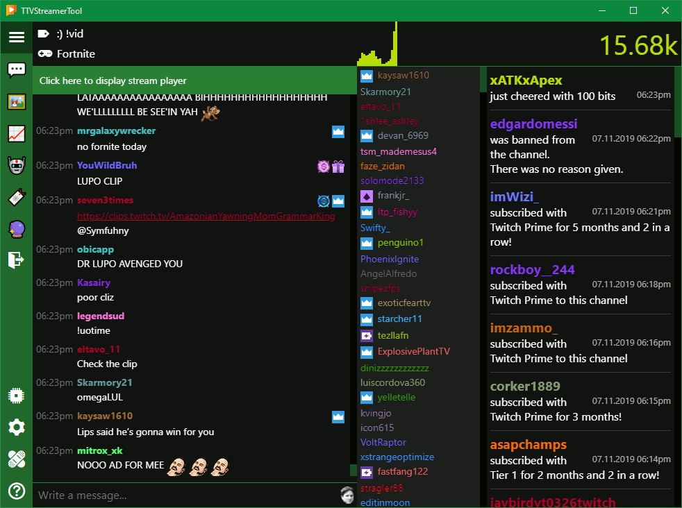

TTVStreamerTool (TTVST) is an application aimed at Twitch streamer. On the main view you will be able to read the chat, see the people who are in the chat, the current number of viewers and notifications for follows, subscriptions, bans, timeouts and other stuff. There is also a local http host in there for OBS or Xsplit overlays. You can set up hotkeys to control these.
Download latest
Windows 8/8.1/10 x64 - v1.11.2
Platform
The TTVStreamerTool is developed and tested on an Windows 10 x64 system. I guess everything >= Windows 8 should work.
Linux or MacOS are not supported. (And propably never will be.)
SmartScreen issue
Microsofts SmartScreen for Windows will (most likely) block the execution of this Setup file. This is because I have no interest to invest a lot of money in a code signing certificate. You can still execute the setup by clicking "More info" on the SmartScreen screen.
Please make sure that you only execute files from sources that you trust!
What it looks like
If you're using TTVST on Windows 10, it will take on the accent color of your system.
